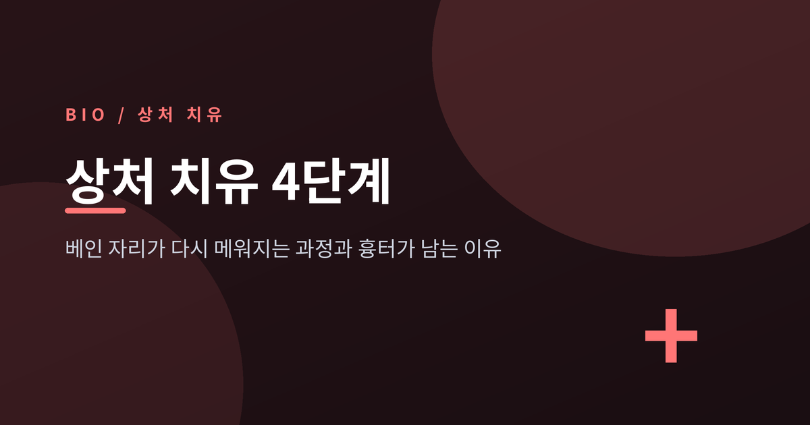
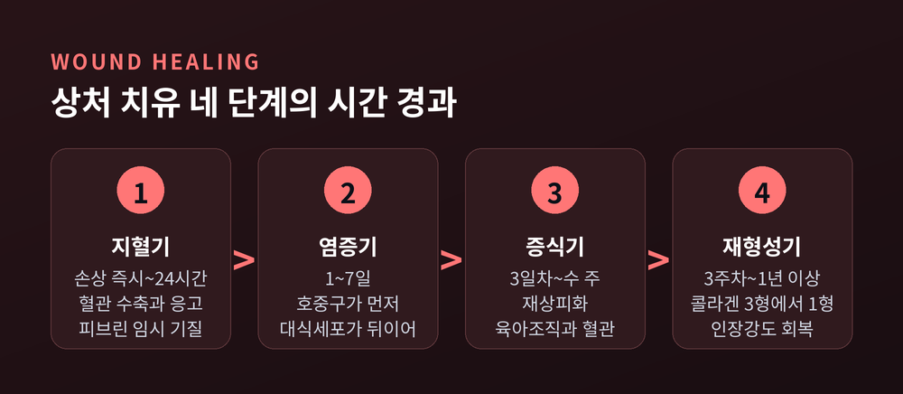
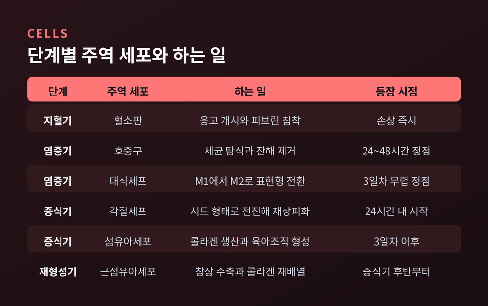
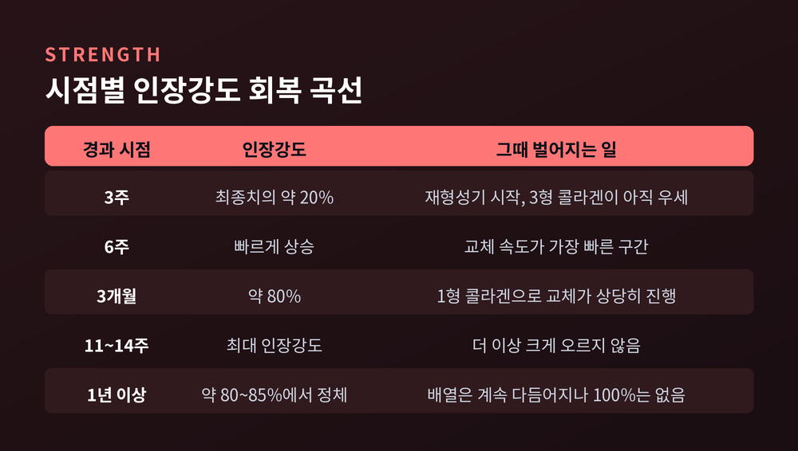
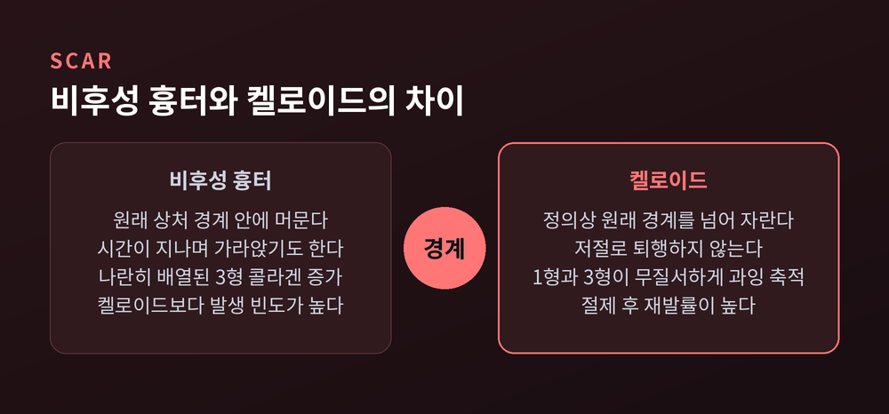
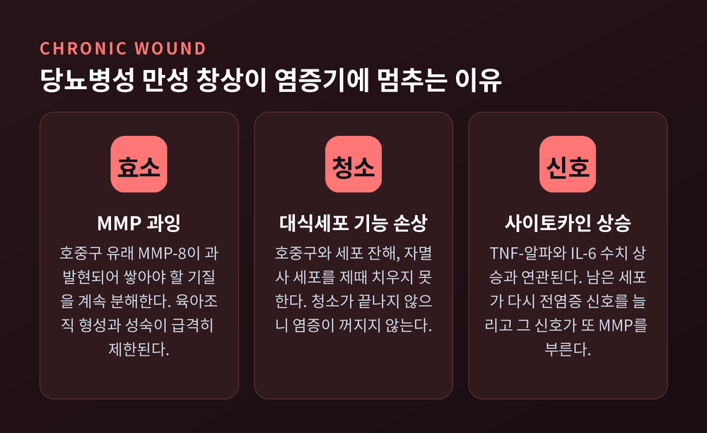

종이에 손가락을 베이면 며칠 뒤 자국만 남습니다. 그 며칠 사이 피부 밑에서는 정해진 순서대로 네 단계의 공사가 진행됩니다. 이번 글에서는 상처 치유가 어떤 단계를 거치는지, 그리고 왜 낫고 나서도 원래만큼 튼튼해지지 않는지를 정리해 보겠습니다.
세 줄 요약
※ 이 글은 일반 생리학 설명입니다. 진단이나 치료 지침이 아니며, 실제 상처는 의료진의 판단을 따르시길 권합니다.

피부 상처의 치유는 지혈기 → 염증기 → 증식기 → 재형성기의 네 단계로 설명합니다.
여기서 먼저 짚을 것이 하나 있습니다. 이 네 단계는 중첩(overlapping) 단계입니다. 앞 단계가 깔끔히 끝난 뒤 다음이 시작되는 것이 아니라, 앞 단계가 한창일 때 다음 단계가 이미 출발합니다.
전 과정을 움직이는 세포도 정해져 있습니다. 혈소판, 호중구, 대식세포, 섬유아세포, 각질세포, 내피세포가 성장인자·케모카인·세포외기질과 함께 작동합니다.
그리고 이 순서 중 하나라도 어긋나면 결과가 달라집니다. 만성 창상, 비후성 흉터, 켈로이드가 모두 여기서 갈라져 나옵니다.

손상 직후 가장 먼저 일어나는 일은 혈관 수축입니다. 동시에 응고 체계가 켜집니다.
주역은 혈소판입니다. 혈소판이 응고 캐스케이드를 개시하고 피브린을 깔아 출혈을 막습니다.
그런데 여기서 만들어진 딱지를 단순한 마개로만 보면 절반만 이해한 셈입니다. 피브린과 피브로넥틴이 엉킨 이 혈병은 이후 세포들이 타고 들어올 임시 기질이기도 합니다. 공사장으로 치면 비계에 해당합니다.
혈소판은 마개를 만드는 동시에 성장인자와 사이토카인을 뿌립니다. 다음 단계를 부르는 호출 신호입니다.
지혈기는 보통 24시간 안에 마무리되며, 자료에 따라 최대 이틀까지 봅니다.
건물을 새로 올리기 전에 잔해부터 치웁니다. 몸도 같습니다.
가장 먼저 도착하는 면역세포는 호중구입니다. 손상 후 6시간 이내에 도착하기 시작해 24~48시간 뒤 농도가 정점을 찍습니다. 세균을 잡아먹고 잔해를 치우며, 혈관을 넓히고 다른 면역세포를 더 부르는 물질을 내놓습니다.
48~72시간 무렵이면 주도권이 넘어갑니다. 호중구가 줄고 단핵구가 들어와 대식세포로 분화합니다.
대식세포에서 가장 흥미로운 대목은 표현형 전환입니다. 초기에는 상처 안 대식세포의 약 85%가 M1, 즉 전염증성 표현형입니다. 그런데 5~7일차가 되면 약 80~85%가 M2, 항염증성으로 바뀝니다. 같은 세포가 태도를 갈아입는 셈입니다.
이 전환이 왜 중요한지는 실험이 보여줍니다. 손상 후 3일차 무렵 대식세포를 제거하면 혈관 형성에 결손이 생기고, 상처가 늦게 닫히며, 육아조직이 제대로 여물지 않습니다.
대식세포는 청소부인 동시에 다음 단계의 스위치입니다.
염증기는 대략 1일부터 5~7일까지 이어집니다.

증식기는 세포외기질을 다시 쌓는 시기입니다. 혈관신생, 육아조직 형성, 콜라겐 침착, 재상피화, 창상 수축이 여기서 한꺼번에 일어납니다.
재상피화부터 보겠습니다. 손상 24시간 이내에 각질세포가 상처 가장자리에서 혈병 안으로 이동하기 시작합니다. 48~72시간 후부터는 가장자리의 기저 각질세포가 증식해 이동할 세포를 보충합니다.
이때 각질세포는 성질 자체를 바꿉니다. 첫 24~48시간 동안 상처 가장자리 각질세포에서 Connexin 43이 내려가면서 이동성 표현형으로 전환됩니다. 붙어 있던 세포가 기어가는 세포로 변신하는 것입니다.
각질세포는 시트 형태로 전진합니다. 가장자리와 모낭 같은 피부 부속기에서 나와 상처를 가로질러 나아가고, 중앙에서 서로 만나면 이동을 멈춥니다.
닫히는 속도는 상처 모양에 좌우됩니다. 봉합처럼 가장자리가 잘 맞닿은 상처는 48시간 안에 재상피화가 가능하지만, 결손이 큰 개방창은 2~3주가 걸리기도 합니다. 초기에 덮였다고 끝난 것도 아닙니다. 그 층의 두께와 구조는 이후 수개월간 계속 바뀝니다.
섬유아세포는 그 아래에서 콜라겐과 피브로넥틴을 뽑아내 육아조직을 만듭니다. 일부는 근섬유아세포로 분화해 상처를 물리적으로 오므립니다. 동시에 대식세포가 내놓는 VEGF를 타고 새 혈관이 자라 들어옵니다. 산소와 영양이 닿아야 공사가 계속되기 때문입니다.
증식기는 대개 3일차 무렵 시작해 상처 크기에 따라 수 주간 이어집니다.
겉이 덮이면 끝난 것처럼 보입니다. 실제로는 여기서부터가 가장 긴 구간입니다.
재형성기의 핵심은 콜라겐 교체입니다. 치유 초기에 급히 깔리는 것은 III형 콜라겐입니다. 빨리 쌓을 수 있지만 약합니다. 이것을 피부의 주력인 I형 콜라겐으로 바꿔 끼우는 작업이 재형성기입니다.
목표는 정상 피부의 비율, 즉 I형 대 III형 약 4 대 1을 되찾는 것입니다.
섬유아세포는 이 기간 내내 콜라겐 섬유를 분해하고 다시 배열합니다. 허물고 다시 쌓기를 반복합니다.
기간은 자료마다 폭이 있습니다. 대체로 3주차 무렵 시작해 1년 안팎, 길게는 그 이상 이어집니다.
숫자로 보면 회복 곡선이 분명해집니다.
3주 시점에 확보되는 강도는 최종치의 약 20%에 불과합니다. 이후 6주까지 빠르게 오르고, 3개월 무렵 약 80%에 도달합니다. 최대 인장강도는 대략 11~14주 사이에 나타납니다.
그리고 거기서 멈춥니다. 흉터는 원래 조직의 100% 강도에 도달하지 못합니다. 자료에 따라 80~85%로 보기도 하지만, 100%라는 값은 나오지 않습니다.
이유는 구조에 있습니다.
정상 피부의 콜라겐은 바구니를 짜듯 여러 방향으로 얽혀 있습니다. 어느 쪽으로 당겨도 버팁니다. 반면 흉터의 콜라겐은 대체로 한 방향으로 나란히 정렬됩니다. 빠르게 붙일 수는 있어도 사방의 힘을 고르게 받지는 못합니다.
여기에 더해, 흉터에는 모낭과 땀샘 같은 피부 부속기가 다시 생기지 않습니다. 정상 탄력섬유 구조도 복원되지 않습니다.
예전에 있던 것은 짜인 직물이었습니다. 지금 남은 것은 덧댄 천입니다.
치유는 복원이 아니라 타협입니다. 몸은 완벽한 재생 대신 빠른 봉합을 택했고, 그 대가가 20%입니다.

같은 재형성 과정이 과하게 돌아가면 흉터가 두꺼워집니다. 여기서 두 가지를 구분해야 합니다.
비후성 흉터는 원래 상처 경계 안에 머뭅니다. 시간이 지나며 가라앉기도 합니다.
켈로이드는 정의상 원래 흉터 경계를 넘어 자랍니다. 경계 안에만 있다면 켈로이드가 아닙니다. 그리고 저절로 퇴행하지 않습니다. 절제해도 재발률이 높아 비후성 흉터보다 다루기 어렵습니다.
조직을 들여다보면 차이가 더 분명합니다. 비후성 흉터는 나란히 배열된 III형 콜라겐이 늘어난 상태입니다. 켈로이드는 I형과 III형이 뒤엉켜 무질서하게 과잉 축적된 상태입니다.
기전의 중심에는 TGF-β/Smad 경로가 있습니다. 섬유아세포와 근섬유아세포의 콜라겐 생산을 조절하는 대표 경로인데, 이것이 계속 켜져 있으면 세포가 장기간 과활성되어 콜라겐이 멈추지 않고 쌓입니다.
흥미로운 점은 TGF-β 아형끼리 방향이 다르다는 것입니다. TGF-β1과 β2는 섬유아세포를 활성화하고, TGF-β3는 억제합니다. 액셀과 브레이크가 같은 집안에 있습니다.
켈로이드 섬유아세포는 이 균형이 한쪽으로 기운 상태입니다. 기질을 분해하는 MMP는 줄어 있고, 성장인자 수용체는 늘어 있으며, TGF-β는 과발현됩니다. 증식·콜라겐 생산·신호 전달이 모두 정상 섬유아세포보다 높습니다.
후성유전 층위도 관여합니다. 항섬유화 유전자의 과메틸화, 그리고 miR-21 같은 친섬유화 microRNA의 상향조절이 TGF-β 신호를 증폭합니다. miR-21은 브레이크 역할을 하는 SMAD7을 눌러 섬유화를 부추깁니다.
켈로이드는 어두운 피부색을 가진 사람에게 더 흔하고 유전적 소인이 있는 것으로 알려져 있습니다.

치유가 안 되는 상처를 "느리게 낫는 상처"로 생각하기 쉽습니다. 기전은 조금 다릅니다.
만성 당뇨병성 궤양은 정상 치유의 염증기에 정체(stalled)된 상태로 설명됩니다. 앞으로 못 가는 것이지, 천천히 가는 것이 아닙니다.
무엇이 발목을 잡는지 세 갈래로 정리해 보겠습니다.
첫째, MMP 과잉입니다. 당뇨 환경에서는 전염증성 사이토카인이 계속 생산되고 기질금속단백분해효소(MMP) 생산이 조절 불능이 됩니다. 특히 호중구에서 나오는 MMP-8의 과발현이 만성 창상 발생에 직접 관여합니다. 쌓아야 할 기질을 분해 효소가 계속 허물어 버립니다. 그 결과 육아조직 형성과 성숙이 급격히 제한됩니다.
둘째, 대식세포 기능 손상입니다. 앞서 본 M1에서 M2로의 전환이 원활하지 않고, 호중구와 세포 잔해, 자멸사 세포를 제때 치우지 못합니다. 청소가 끝나지 않으니 염증이 꺼지지 않습니다.
셋째, 사이토카인 상승입니다. 당뇨 환자는 창상 감염과 과염증에 더 취약하며 TNF-α와 IL-6 수치 상승과 연관됩니다. 치우지 못한 세포가 다시 전염증성 신호를 늘리고, 그 신호가 또 MMP를 부릅니다.
정리하면 악순환의 고리입니다. 호중구의 MMP 과잉 → 기질 분해 → 육아조직이 쌓이지 않음 → 증식기로 못 넘어감 → 염증 지속.
다시 강조하지만 이는 기전 설명입니다. 실제 만성 창상의 평가와 처치는 의료진의 영역입니다.

흉터가 피할 수 없는 운명인가. 연구자들이 오래 붙잡고 있는 반례가 하나 있습니다.
중기 임신 단계의 태아 피부는 흉터를 남기지 않고 치유되는 것으로 알려져 있습니다.
조건을 뜯어보면 특징이 겹칩니다. 염증 반응이 최소한으로 억제되어 있고, TGF-β 아형이 균형을 이루며, 임시 세포외기질이 III형 콜라겐과 히알루로난으로 풍부합니다.
히알루론산 대목이 특히 인상적입니다. 태아 피부는 성인보다 히알루론산이 훨씬 많습니다. 그런데 태아 혈소판은 히알루론산 농도가 높은 환경에서 잘 응집하지 않고, 결과적으로 혈소판 유래 사이토카인을 더 적게 방출합니다. 염증의 출발 신호 자체가 약하게 눌려 있는 셈입니다.
TGF-β 쪽에서는 비율이 관건으로 지목됩니다. 임신 후기로 가면서 TGF-β1과 β2가 늘고 TGF-β3가 줄어드는데, 이 변화가 흉터 형성으로의 전환과 맞물립니다. 앞서 본 브레이크가 약해지는 것입니다. 재태 연령에 따라 TGF-β 경로를 조절하는 miRNA 양상이 달라진다는 보고도 이 그림과 맞습니다.
다만 여기까지입니다. 태아 무흉터 치유는 아직 연구 단계의 모델입니다. 이 조건을 성인 피부에서 그대로 재현하는 임상적 방법이 확립되었다고 말할 근거는 없습니다.
정리하면 이렇습니다.
몸은 베인 자리를 원래대로 되돌리지 않습니다. 몇 분 만에 피를 멎게 하고, 며칠 안에 잔해를 치우고, 몇 주에 걸쳐 빈자리를 채운 뒤, 남은 1년을 콜라겐 재배열에 씁니다. 그렇게 얻은 결과가 원래의 80%입니다.
"치유는 복원이 아니라, 빠른 봉합과 완벽한 재생 사이에서 몸이 내린 타협이다."
감염과 출혈로 목숨을 잃던 시절을 생각하면, 이 타협은 충분히 합리적인 선택이었을 것입니다. 흉터가 남은 자리를 다시 보게 되신다면, 그것이 실패의 자국이 아니라 속도를 택한 흔적이라는 점도 함께 떠올려 보시면 좋겠습니다.